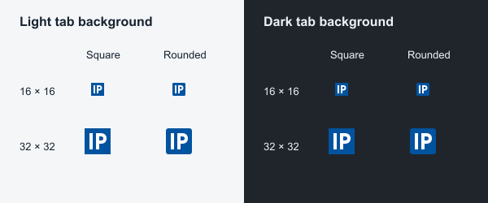

CoA blue #00539F. Identical outlined lettering; rounded version has a 3/32 corner radius. Icons below are shown at 16 and 32 CSS pixels. View at 100% zoom.

Design candidates only; neither is installed on the website.